Your apps, your order
Arrange the dock with your remote. Open the all-apps grid with Down, ranked by what you use, with 5, 6 or 7 apps per row. Hold OK to add, move or remove an app.
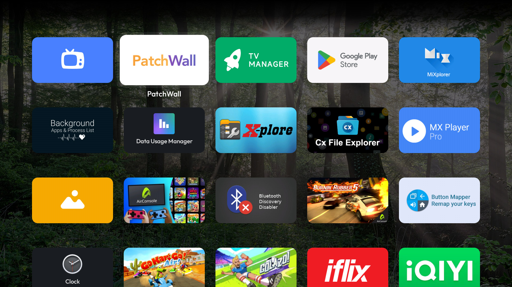
Your apps, your day, and the things you actually care about. A fast, personal launcher for Android TV and Google TV—without a wall of recommendations.
About 550 KB. That’s the whole launcher, every feature included. Live data, like the weather and the Globe’s maps, downloads only when it’s used.
No computer needed to install. Download the APK from the latest release, install it on the TV from a USB drive or the Downloader app, then pick it as Home. Updates arrive in Settings → About.

Made for a TV, not a phone stretched across one. The important things are one remote press away, and every card can make room for what matters to you.
Arrange the dock with your remote. Open the all-apps grid with Down, ranked by what you use, with 5, 6 or 7 apps per row. Hold OK to add, move or remove an app.

A clear clock, Hijri date, five daily prayer times and a next-prayer countdown. Your city's Kemenag times are found from the TV's location, or choose any of the 58 Indonesian cities; optional azan and early reminders appear over other apps.
BMKG forecasts for the city nearest your TV, temperature and feels-like, and Copernicus air quality with US AQI and PM2.5. Rain, mist, lightning and haze briefly play on the home screen, then settle.
See title, artist, art and playback controls when audio is playing. Your most-used apps card takes its place when the music stops.
CPU clock, RAM, storage, uptime, Wi-Fi and debugging at a glance. The running-apps view shows what’s active and lets you close or hide apps.
Optional Net traffic monitor: which app reached which server and country, with the server’s name, protocol and data used—drawn as routes on the Globe. A local VPN on the TV itself: nothing is sent anywhere, nothing decrypted, history kept 30 minutes in memory.

Bing’s daily photo, seven built-in wallpapers or your own. Choose which cards show, dim the wallpaper, set your clock and tune notifications—all in the TV’s Settings.
Give any remote button a new single, double or long press: open an app, Android or TV Home settings, the screen saver, sleep, the power menu, a screenshot, mute or volume. Press the button to add it. Works with USB debugging off; the arrows and OK stay as they are.

Hold OK on the Settings gear to start the screen saver, set a sleep timer, sleep, restart or shut down (restart and shut down ask first). An Inputs menu for HDMI, AV and Live TV; a bell for launcher and Play Store updates, devices and low memory; connection alerts; and an optional info bar over apps.
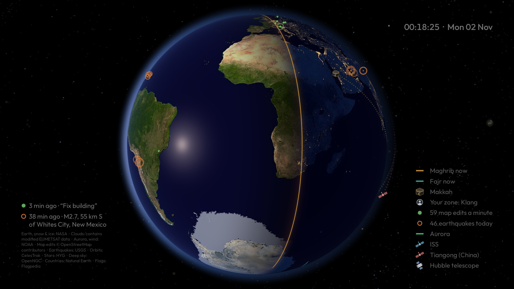
Watch Earth in its real orientation and sunlight. Follow the Maghrib and Fajr lines, Makkah and your qibla, city lights, sun glint, aurora, earthquakes, live map edits and the actual orbits of the ISS, Tiangong and Hubble.
Choose a 2-minute camera orbit or real-time Earth rotation; turn the view with your remote. Sky catalogues and some other layers download when first used, then stay available offline. Dim moving visuals help protect against burn-in.
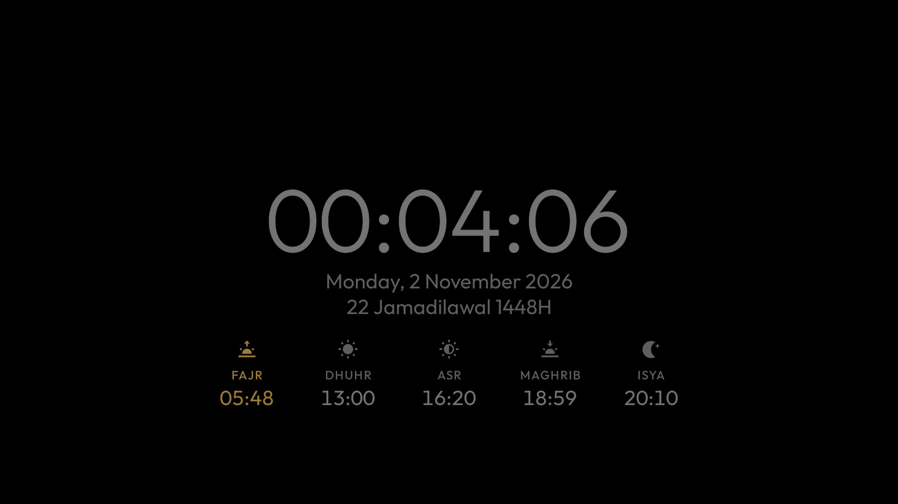

Open SwadayaTV’s local address in your phone’s browser and pair with a PIN on the TV. Swipe to navigate, type, control media and volume, manage apps and the dock, change settings, send a message or link, and move files to and from the TV.
On the same Wi-Fi, open http://<TV IP>:8486. Some controls need USB debugging; the basic remote and other features keep working when it’s off. Keep this local service on a trusted network.

Select a screenshot to see the complete phone view.

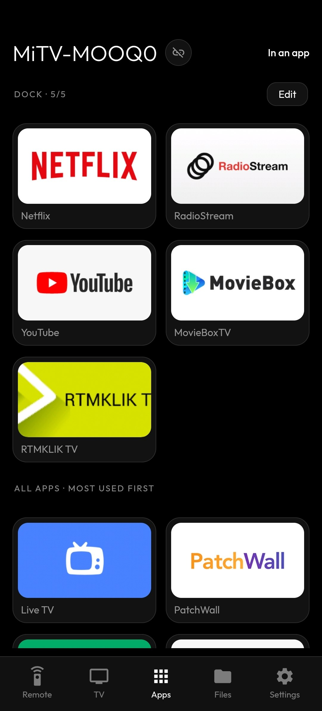
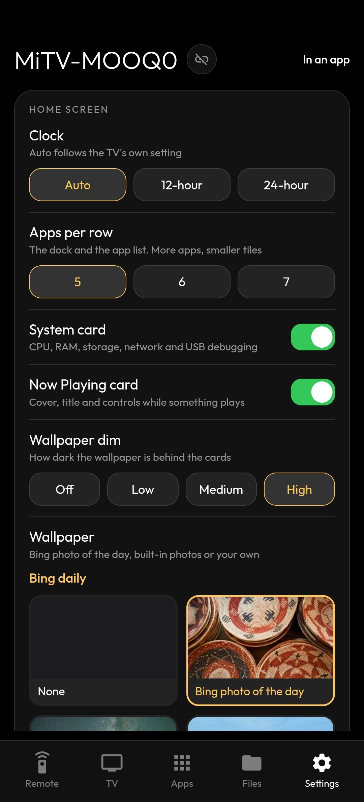
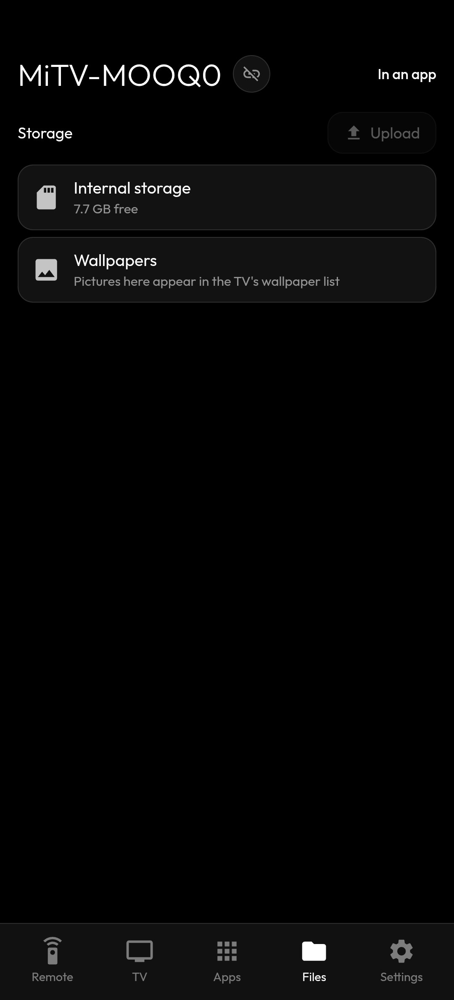
Real, complete 1920 × 1080 captures from the TV. Open any image to see every pixel—nothing is cropped.

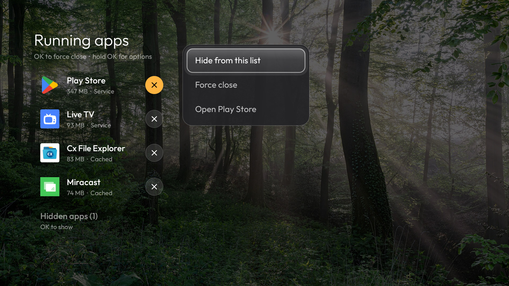
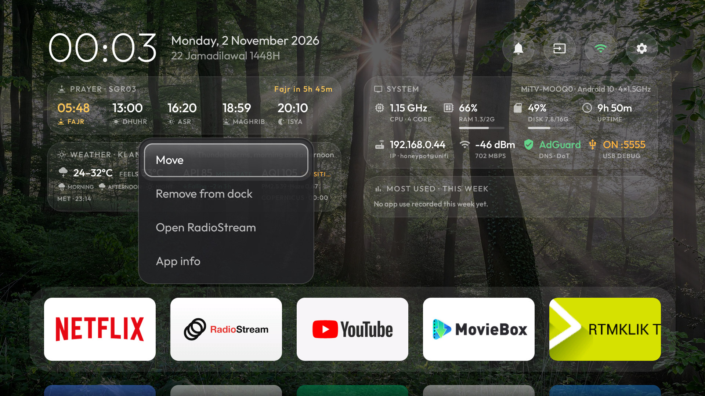
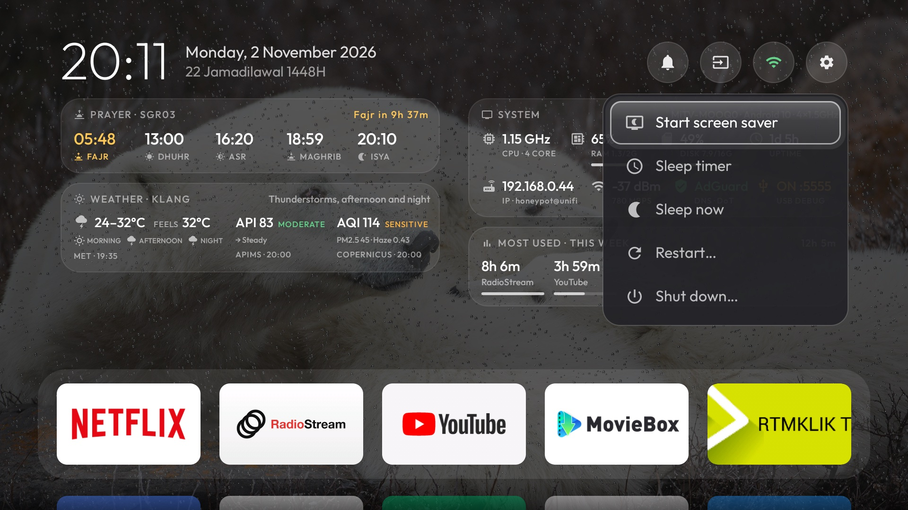
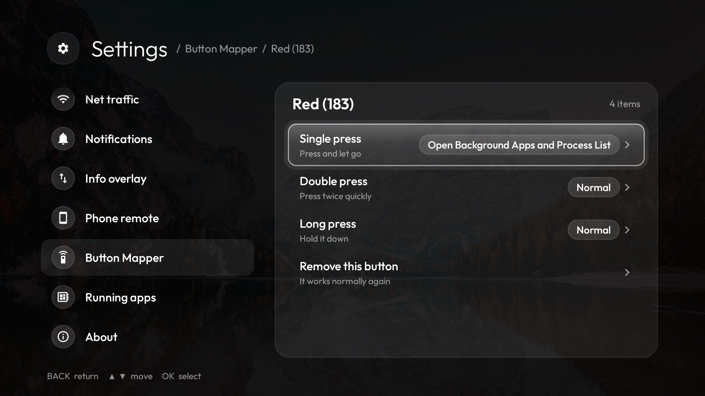
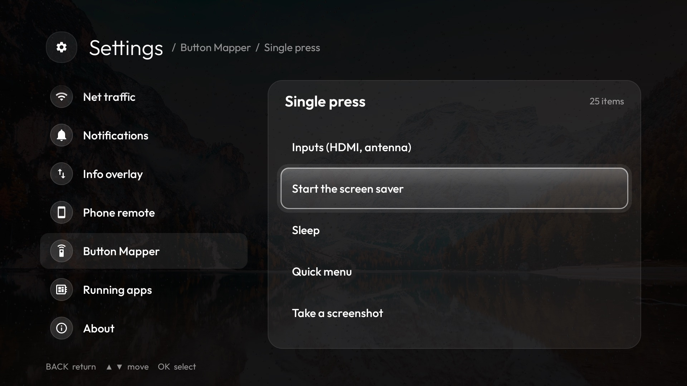
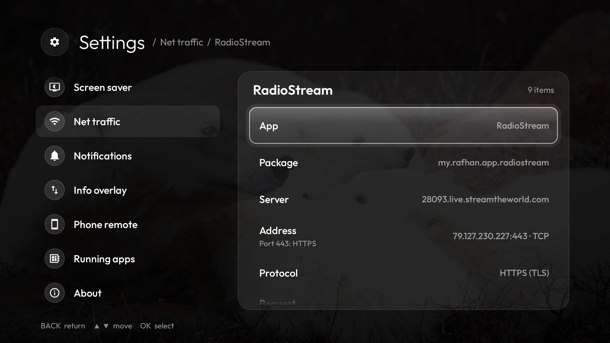

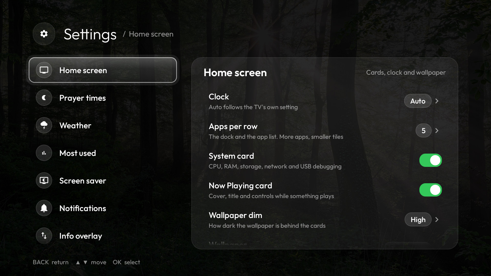
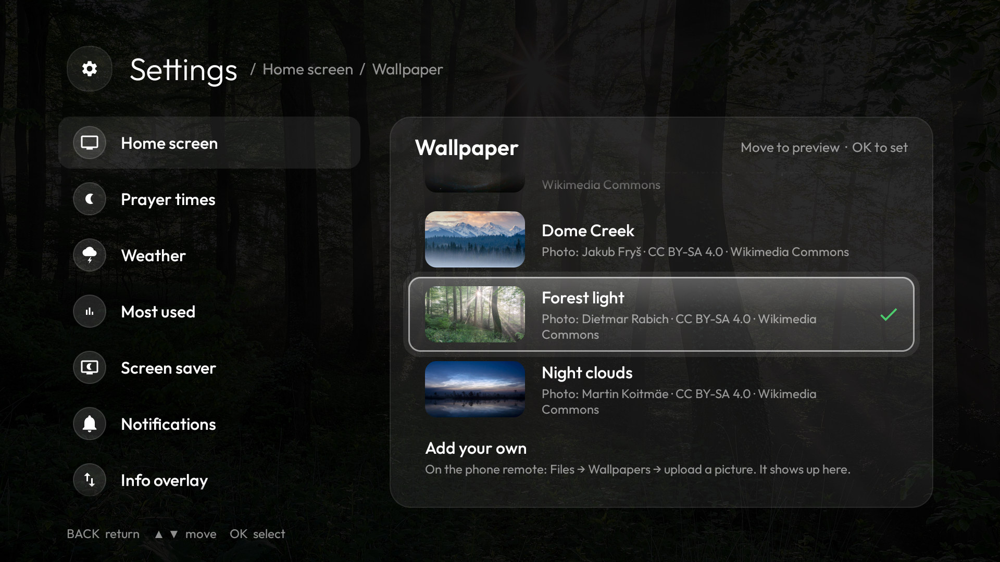


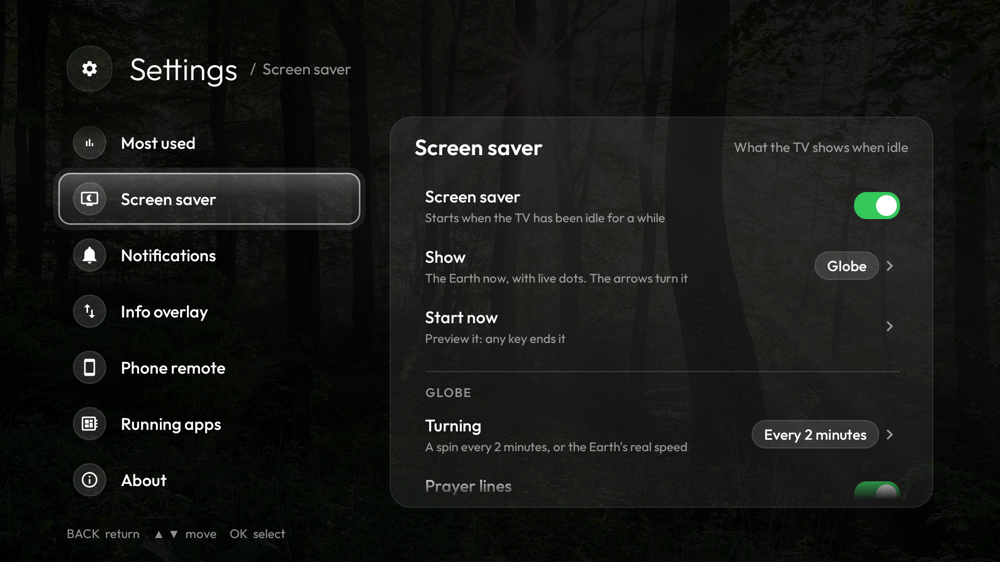

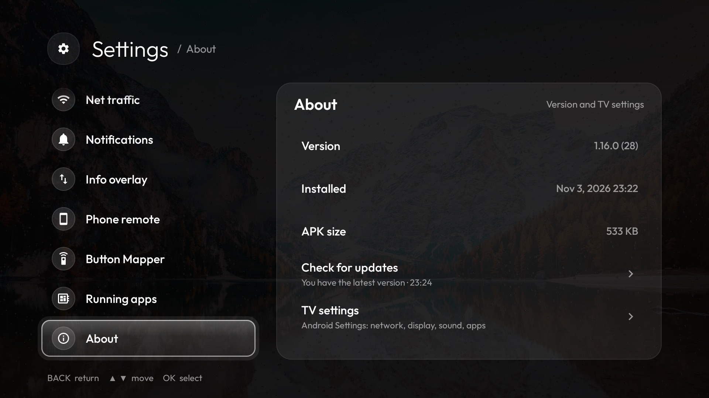
One APK from the releases page. Install it on the TV, allow the file manager to install apps, and set SwadayaTV as Home in the TV’s own settings. Later updates arrive in the bell or Settings → About.
Open the latest release and, under Assets, download tvhome-<version>.apk (for example tvhome-1.2.0.apk). The Net traffic engine’s files are attached to the same release; the app fetches them by itself the first time the monitor starts.
Copy the APK to a USB drive, or send it with the Downloader app. Open it on the TV, allow installing from this source when asked, and choose Install. No computer or ADB needed.
In the TV’s own settings, choose SwadayaTV as the Home screen (on Google TV, also pick it as the default launcher). Press Home: your apps, the clock and today’s prayer times are there. Updates are in Settings → About.
Every release keeps its APK and its eight netengine-*.so files; publishing a newer release doesn’t remove them, so a TV still on an older version can download what it needs. If you prefer a computer and adb, the install guides cover the scripts and the same APK.
Installing from a file needs Install unknown apps allowed for the file manager or Downloader on the TV.
USB debugging is optional. The launcher, Live TV, wallpapers, weather, prayer times, the phone remote and updates work without it. A few extras — Now Playing, the Live log screen saver on Android 12 and older, switching the screen saver, restart and shut down, force-closing apps, and the remote’s keyboard and screenshot — ask for it in Developer options.
Swadaya App is a small Android app that talks to your TV over Wi-Fi: it installs SwadayaTV, then switches off the ads, the recommendation rows and the preinstalled apps that slow the TV down. No computer, no cable, and nothing is uninstalled—every change can be turned back on.
Download swadaya-app-1.0.0.apk, open the file, and allow the install when Android asks. It is 152 KB, and you only install it once.
Turn on USB debugging and Network debugging on the TV (once), type the TV’s IP address in the app and tap Connect. The TV asks for permission—choose Always allow, then OK.
Install SwadayaTV as Home with the app’s own button first, then tap Clean now. Every app it switches off is recorded, so it can be restored later. When you are done, turn debugging back off on the TV.
Android 8 or newer, on the same Wi-Fi as the TV. Read the phone-only guide ↗